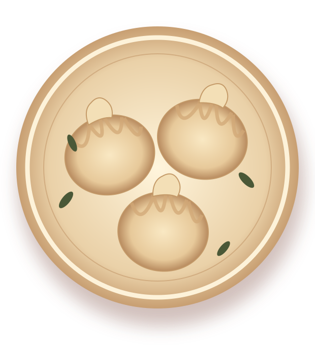

ГРУЗИНСКАЯ КУХНЯ · КРАСНОДАР
Повод
собраться
вместе.
Хинкали, хачапури и долгие разговоры за столом. Выбирайте, что попробовать, и приезжайте в гости.
Краснодар • ул. Тургенева, 122
ВКУСНЫЕ ПОВОДЫ
УЖЕ ЗДЕСЬ
УЖЕ ЗДЕСЬ

ТЕПЛО / ВКУС / ВСТРЕЧИ✳
НЕЗАВИСИМО ОТ ПОВОДА
Хороший вечер
начинается за столом.
Выберите блюдо в актуальном меню, позовите тех, с кем хочется разделить вечер, и приезжайте на Тургенева.
Смотреть актуальное меню →01ХинкалиВ центре внимания
02ХачапуриДля общего стола
03ШашлыкДля долгого вечера
ЖДЁМ В ГОСТИ
Встретимся
на Тургенева.
Краснодар, улица Тургенева, 122. Уточните режим работы в карточке заведения перед визитом.